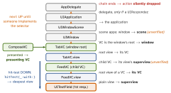

design · folio
In one line: You use GoF patterns daily: the responder chain is Chain of Responsibility,
target–action/UndoManager is Command (+ Memento), NotificationCenter/KVO/Combine are
Observer, class clusters are Abstract Factory, appearance() is a Proxy, a
ViewModifier a Decorator. Each row: pattern + API + mechanism + the gist.
Download PDF Print view LaTeX source

| Pattern | Where Apple put it | Mechanism | In short |
|---|---|---|---|
| Chain of Resp. | responder chain: UIResponder.next;
sendAction(_:to: nil, from:for:) | selector not implemented? pass to next
until someone does, or the chain ends | Copy/Paste find a handler by walking the chain. |
| Command +Memento | target–action, UIAction, UIKeyCommand, ObjC
NSInvocation; UndoManager | request stored as data, run later; the undo closure captures the old value = the memento | UndoManager is a command stack over snapshots. |
| Observer | NotificationCenter · KVO · Combine @Published · @Observable
(iOS 17) | notify subscribers you don’t know; @Observable tracks the properties a
body read | broadcast → KVO → typed streams → access tracking |
| Delegation +Strategy | table delegate + data source; UICollectionViewLayout;
keyDecodingStrategy | weak helper called at fixed hooks; a layout object = a whole algorithm, swapped at
runtime | Delegate: many hooks, one owner. Layout: Strategy. |
| Abstract Factory | class clusters: NSArray, NSNumber,
NSString, NSDictionary | public abstract class; init returns a
private subclass (__NSArrayI, __NSArrayM) | Apple documents clusters as Abstract Factory. |
| Proxy | UIAppearance: UINavigationBar.appearance(); ObjC
NSProxy | proxy records setters, applies them when a view enters a window | Not the bar — a recorder. |
| Decorator | SwiftUI ViewModifier, .padding(), .background() | each call wraps: ModifiedContent<Content, Modifier>, nested | The wrapping is in the type — order matters. |
| Composite | UIView/CALayer trees, SwiftUI view tree,
UIMenu(children:) | leaf + container share one interface; operations recurse | Hit-test walks it down, the chain up. |
| Adapter | UIViewRepresentable (UIKit→SwiftUI), UIHostingController
(SwiftUI→UIKit) | makeUIView/updateUIView; its Coordinator
adapts UIKit delegates | Imperative view behind a declarative protocol. |
| Iterator | Sequence + IteratorProtocol, AsyncSequence | makeIterator(), then next() until nil | for-in is sugar
for it. |
| Visitor-like | Codable: JSONEncoder().encode(v) →
v.encode(to:) → c.encode(x, forKey:) | hop 1 dispatches on the value’s type, hop 2 on the encoder’s (= format) | Double dispatch: one
encode(to:), any format. |
| Chain→Strategy | URLProtocol; config.protocolClasses;
URLProtocol.registerClass | first class whose canInit(with:) says
true loads it (registered: reverse order) | The standard network stub in tests. |
| Prototype | NSCopying: copy(), mutableCopy() | copy a configured instance; Foundation copies are shallow | Swift: var b = a. |
| Singleton | UIApplication.shared vs shared instances
(URLSession.shared, FileManager.default) | only UIApplication is one per
process (UIApplicationMain); others you may create | Shared instance ≠ singleton; inject it anyway. |
Also, on other folios: Template Method = VC lifecycle,
layoutSubviews · Factory Method = class var layerClass · Facade =
URLSession · Flyweight = UIImage(named:) · Interpreter = NSPredicate ·
Object Pool = cell reuse.
The responder chain, exact rules

Touches start at the hit-tested view; keys, menus and nil-target actions
at the first responder. Scene step: Apple forum answer — the article still says
window → app.
Traps
- Hit-test (down) ≠ responder chain (up): two walks over one Composite.
- A
nil-target action nobody implements does nothing — no crash, no log. appearance()changed while a view is on screen: no effect until it re-enters a window.type(of: NSArray())is a private subclass — never compare a cluster’s class.URLSession.sharedis a shared instance, not a singleton.
Remember
Chain walks up · Command stores the request · Observer fans out · Delegate answers back · Cluster hides the subclass · Proxy records · Modifier wraps · Codable dispatches twice.
Example — drive the patterns yourself
// Chain: nil target -> first responder -> up ("hide keyboard")
UIApplication.shared.sendAction(#selector(UIResponder
.resignFirstResponder), to: nil, from: nil, for: nil)
// Chain -> Strategy: URLProtocol stubs the network in tests
final class StubProtocol: URLProtocol {
nonisolated(unsafe) static var body = Data()
override class func canInit(with r: URLRequest) -> Bool { true }
override class func canonicalRequest(for r: URLRequest)
-> URLRequest { r }
override func startLoading() {
client?.urlProtocol(self, didLoad: Self.body)
client?.urlProtocolDidFinishLoading(self) }
override func stopLoading() {} }
let cfg = URLSessionConfiguration.ephemeral
cfg.protocolClasses = [StubProtocol.self]
// Command + Memento: the closure captures the OLD value
@MainActor func rename(_ doc: Doc, to new: String,
undo: UndoManager) {
let old = doc.title // the memento
undo.registerUndo(withTarget: doc) { d in // use d, not doc
rename(d, to: old, undo: undo) } // = registers redo
undo.setActionName("Rename"); doc.title = new }Doc: a final class with var title. Registering
inside the undo handler is what makes redo work — during undo, UndoManager puts
new registrations on the redo stack.